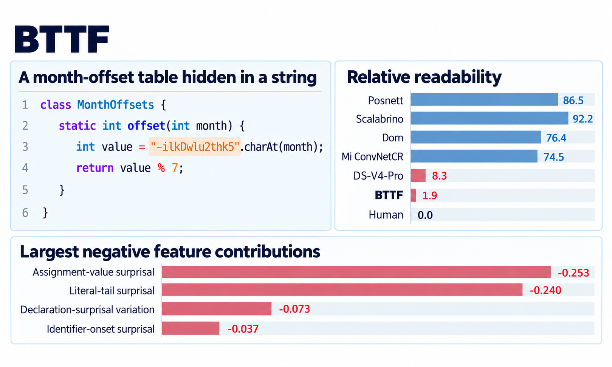

An interpretable code readability model combining traditional measurements, semantic organisation, and contextual surprisal.
Explore how mapping reduction helps us understand the limits of computation, from the Halting Problem to Rice’s Theorem.
An introduction to Turing machines, decision problems, and the proof of the Halting Problem's undecidability.